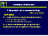
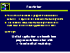
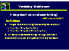
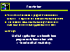

A Web-based Architecture for a Medical Vocabulary Server
For health care providers to share computing resources and medical application programs across different sites, those applications must share a common medical vocabulary. To construct a common vocabulary, researchers must have an architecture that supports collaborative, networked development. In this presentation, we describe a web-based server architecture for the collaborative development of a medical vocabulary: a system that provides network services in support of medical applications that need a common, controlled medical terminology. The server supports vocabulary browsing and editing and can respond to direct programmatic queries about vocabulary terms. We have tested the programmatic query-response capability of the vocabulary server with a medical application that determines when patients who have HIV infection may be eligible for certain clinical trials.
 



Jump to...
[SMI Presentations]
[Section on Medical Informatics at Stanford (SMI)]
[CAMIS]
Feedback to gennari@smi.stanford.edu.